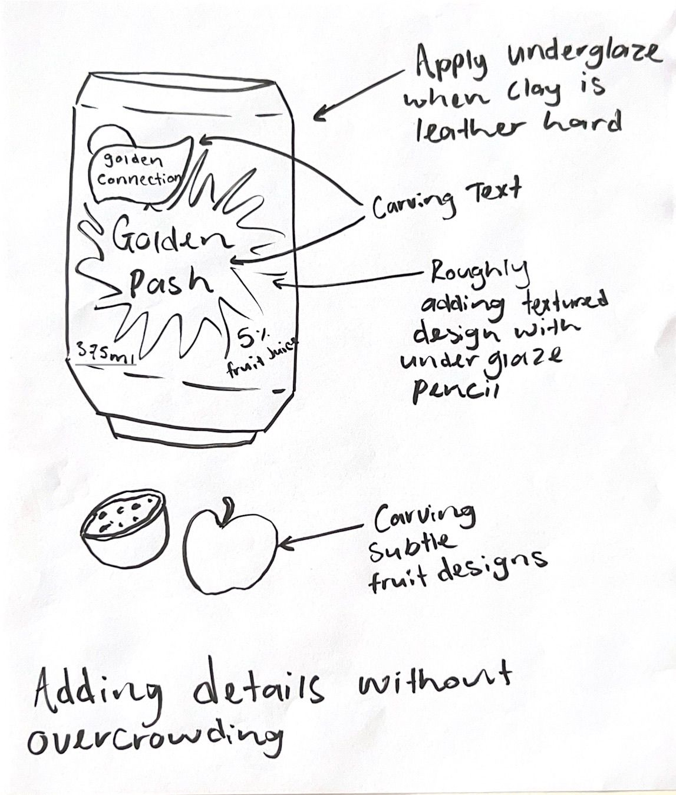
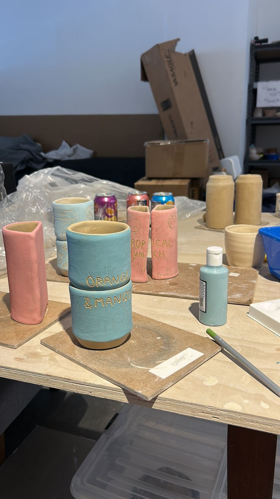
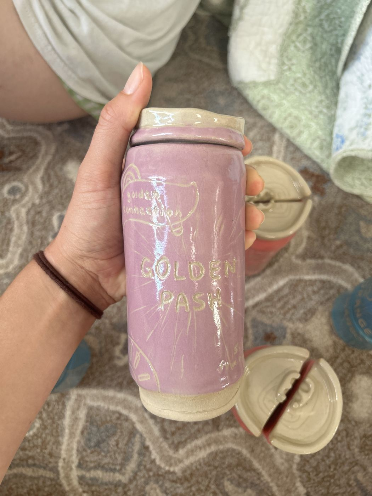
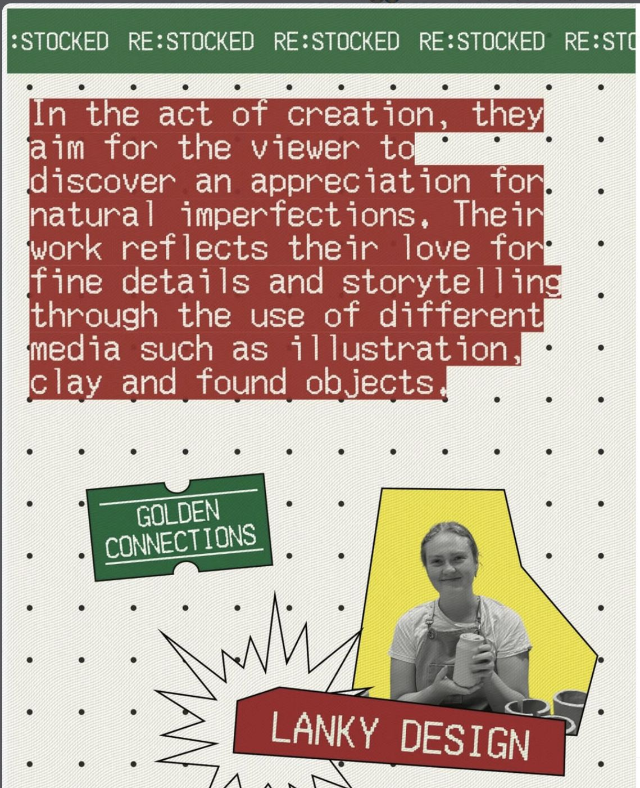

Auckland Design Week.
After seeing a call out to for designers to create inspired by the nostalgia of the classic NZ dairy, Jodi was eager to put her hat in the ring. This spoke to Jodi as an opportunity to work to another's brief and participate in Auckland Design Week.
Jodi was selected for her idea inspired by the connection that drinks create between people. Coined a ' Golden Connection', Jodi recreated the familiarity of Golden Circle drinks with a lanky twist. The can's shapes were designed to be stored. She experimented with various ways of 'splitting a drink'. This became part of collaborative collection of young designers work exhibited in the showcase.
This opportunity celebrated Jodi the joy of storytelling through her work. She's eager to continue creating with little moments like sharing a drink in her mind.



